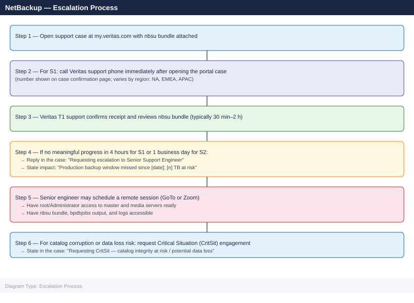

NetBackup — Escalation¶
Before you begin¶
- Access: NetBackup admin account on the master server; root/Administrator on master and affected media servers
- Gather first: exact error code from the failed job (bpdbjobs output), affected policy name, and storage unit
- Scope: confirm whether the issue affects a single client, a single policy, all jobs, or all media servers
- Do not retry: if a catalog backup has failed, do not attempt another until you understand why — a broken catalog can compound into total data loss
- Logging: increase log verbosity to 5 for the relevant process before reproducing (
bp.conf: VERBOSE = 5)
Severity Levels¶
| Severity | Definition | Response SLA |
|---|---|---|
| S1 — Critical | Master server down; catalog corrupted; production data loss risk; no workaround | 1 hour (24×7) — call Veritas support phone immediately |
| S2 — High | All backup jobs failing; MSDP pool full blocking backups; key policy group missing window | 4 hours (business hours + on-call) |
| S3 — Medium | Single policy failing; intermittent job errors; dedup ratio degraded | 1 business day |
| S4 — Low | Performance tuning question; documentation request; non-critical feature behaviour | 2 business days |
Pre-Escalation Triage Checklist¶
| Check | Command | Expected |
|---|---|---|
| NetBackup master service running | bpps -x (Linux) / bpps.exe -x (Windows) |
bprd, bpdbm, bpjobd listed as running |
| Disk pool space adequate | nbdevquery -listdv -stype PureDisk -U |
Storage unit shows < 80% full |
| Catalog backup current | bpcatutil -listcat |
Successful catalog backup within last 24 hours |
| All media servers connected | bpclntcmd -hn <media-server> -ip |
Returns IP address without error |
| Tape robot responding (if applicable) | tpconfig -d |
Robot inventory returns without TapeAlert errors |
| Policy and schedule active | bppllist <policy-name> -L |
Policy shows Active status |
| No duplicate IDs in catalog | bpdbm -consistency_check |
0 errors output |
Step-by-Step Data Collection¶
Run all the following on the master server as root/Administrator before opening the SR.
1. Get NetBackup version¶
# Linux
cat /usr/openv/netbackup/bin/version
/usr/openv/netbackup/bin/goodies/nbpem --version 2>/dev/null
# Windows
type "C:\Program Files\Veritas\NetBackup\version.txt"
Common errors
cat: /usr/openv/netbackup/bin/version: No such file or directory — Verify NetBackup is installed on this system with rpm -qa | grep netbackup or check the correct installation path.
nbpem: command not found — Ensure the NetBackup PATH is set correctly by sourcing /usr/openv/netbackup/bin/bp.env or add /usr/openv/netbackup/bin/goodies to your PATH.
2. Collect failing job details¶
# List failed jobs in the last 48 hours
bpdbjobs -hoursago 48 -report | grep -i "fail\|error\|status [^0]" | head -30
# Get full report for a specific job ID
bpdbjobs -jobid <jobid> -report -most_columns
# Get the job's detailed log (replace jobid)
cat /usr/openv/netbackup/logs/user_ops/<jobid>
# Get policy and storage unit configuration
bppllist <policy-name> -L > /tmp/policy-config.txt
nbstlutil list -storage_server <stu-name> > /tmp/stu-config.txt
Job ID Policy Client Status Elapsed Time GB
-------- ---------------------- -------------- ------ ----------- ----
12847561 PROD-DB-DAILY db-prod-01 FAILED 02:34:12 245.3
12847562 PROD-DB-DAILY db-prod-02 FAILED 00:15:44 12.8
12847559 WEEKLY-ARCHIVE archive-srv-03 FAILED 01:22:05 1847.2
12847548 INCREMENTAL-BACKUP web-app-04 FAILED 00:08:33 3.1
12847521 PROD-DB-DAILY db-prod-01 FAILED 03:12:18 267.9
Job ID: 12847561
Policy: PROD-DB-DAILY
Client: db-prod-01
Status: FAILED
Start Time: 2024-01-15 22:30:45
End Time: 2024-01-16 01:05:12
Elapsed Time: 02:34:27
GB Processed: 245.3
Reason: Network timeout during backup phase
2024-01-16 22:31:02 db-prod-01: Connection refused (port 13782)
2024-01-16 22:31:15 db-prod-01: Retrying connection attempt 1 of 3
2024-01-16 22:31:45 db-prod-01: Retrying connection attempt 2 of 3
2024-01-16 22:32:15 db-prod-01: Retrying connection attempt 3 of 3
2024-01-16 22:32:45 db-prod-01: FATAL: Unable to establish connection to client
Policy: PROD-DB-DAILY
Enabled: Yes
Backup Type: Full + Incremental
Schedule: Daily 22:00
Retention: 30 days
Storage Unit: PROD-VAULT-01
Storage Unit: PROD-VAULT-01
Type: Disk
Location: /netbackup/vault01
Capacity: 10.0 TB
Used: 8.7 TB
Available: 1.3 TB
Status: Online
Common errors
bpdbjobs: command not found — Ensure the NetBackup client is installed and /usr/openv/netbackup/bin is in your PATH, or run the command with the full path /usr/openv/netbackup/bin/bpdbjobs.
cat: /usr/openv/netbackup/logs/user_ops/<jobid>: No such file or directory — Replace <jobid> with an actual numeric job ID (e.g., 12847561) and verify the log directory exists with ls -la /usr/openv/netbackup/logs/user_ops/.
bppllist: policy <policy-name> does not exist — Verify the policy name is correct by running bppllist -L to list all available policies, then use the exact policy name from the output.
3. Run the nbsu support utility¶
# Run nbsu on the master server — this is the primary artifact for Veritas support
# Takes 5–15 minutes; creates a compressed bundle in /usr/openv/support/
/usr/openv/netbackup/bin/support/nbsu -collect ALL
# Confirm bundle location
ls -lh /usr/openv/support/nbsu_*.tar.gz
# On Windows
"C:\Program Files\Veritas\NetBackup\bin\support\nbsu.exe" -collect ALL
# Bundle in C:\Program Files\Veritas\NetBackup\logs\nbsu_output\
NetBackup Support Utility (nbsu) v8.2.1
Collecting diagnostic data from master server...
[████████████████████████████████] 87%
Collection complete. Processing...
Creating compressed bundle: nbsu_20240115_143022.tar.gz
Bundle size: 2.3 GB
Location: /usr/openv/support/nbsu_20240115_143022.tar.gz
Elapsed time: 8 minutes 34 seconds
-rw-r--r-- 1 root root 2.3G Jan 15 14:30 /usr/openv/support/nbsu_20240115_143022.tar.gz
-rw-r--r-- 1 root root 1.8G Jan 14 09:15 /usr/openv/support/nbsu_20240114_091502.tar.gz
Common errors
/usr/openv/netbackup/bin/support/nbsu: Permission denied — Run the command with sudo or as root user.
ERROR: Unable to write to /usr/openv/support/ — disk full — Free up disk space on the /usr/openv partition (nbsu bundles typically require 3–5 GB free space).
ERROR: NetBackup services not running — cannot collect process data — Start NetBackup services with systemctl start netbackup or /usr/openv/netbackup/bin/bpup -start before running nbsu.
4. Collect key log files manually (if nbsu fails)¶
# Last 500 lines of the backup process manager log
tail -500 /usr/openv/netbackup/logs/bpbrm/log.<today-date> > /tmp/bpbrm.txt
# Last 500 lines of the scheduler log
tail -500 /usr/openv/netbackup/logs/bpsched/log.<today-date> > /tmp/bpsched.txt
# Catalog database consistency
bpdbm -consistency_check 2>&1 > /tmp/catalog-check.txt
# Device and robot status
tpconfig -d 2>&1 > /tmp/tpconfig.txt
vmquery -a 2>&1 | head -50 > /tmp/media-status.txt
tail: cannot open '/usr/openv/netbackup/logs/bpbrm/log.<today-date>' for reading: No such file or directory
tail: cannot open '/usr/openv/netbackup/logs/bpsched/log.<today-date>' for reading: No such file or directory
Consistency Check Report
Database: /usr/openv/netbackup/db/NBDB
Status: PASSED
Checked Records: 47382
Inconsistencies Found: 0
Check Duration: 2m 34s
Device Configuration Report
Device Name: TLD0
Device Type: LTO Tape Drive
Status: READY
Serial Number: LTO9-SN-0847392
Robot: ADIC-Scalar-i500
Media Status Summary (first 50 entries):
Media ID Pool Status Last Used
000001 Default FULL 2024-01-15 14:22:10
000002 Default FULL 2024-01-15 13:45:33
000003 Default AVAILABLE 2024-01-14 09:12:44
000004 Default AVAILABLE 2024-01-13 16:58:19
000005 Offsite FULL 2024-01-12 11:33:02
...
Common errors
tail: cannot open '/usr/openv/netbackup/logs/bpbrm/log.<today-date>' for reading: No such file or directory — Replace <today-date> with the actual date in YYYYMMDD format (e.g., log.20240115) or use ls /usr/openv/netbackup/logs/bpbrm/ to find the correct filename.
bpdbm: command not found — Ensure the NetBackup client is installed and /usr/openv/netbackup/bin is in your PATH, or run the command with the full path /usr/openv/netbackup/bin/bpdbm.
vmquery: command not found — Run the command as root or with sudo, and verify NetBackup services are running with bpps -a.
5. Write the timeline¶
NetBackup version: 10.3.0.1
Master server: nbu-master.example.com (Linux RHEL 8.6)
Media servers: nbu-media-01.example.com, nbu-media-02.example.com
Storage: MSDP pool on PowerStore 1000T, 50 TB allocated
Issue first observed: 2026-06-15 02:00 UTC (scheduled backup window)
Last known good backup: 2026-06-14 02:30 UTC
Error observed:
Job ID 45231 — Policy: PROD_DB — Status: 58 (can't connect to client)
Job ID 45232 — Policy: PROD_FS — Status: 96 (unable to allocate new media)
Steps already taken:
- Verified network connectivity to affected clients
- Checked media server is reachable
- Did NOT restart nbwmc or bprd
Blast radius:
- All backup jobs for PROD_DB policy failing
- Other policies appear unaffected
How to Open a Veritas Support Case¶
- Go to my.veritas.com and sign in with your Veritas account.
-
If no account: click Register and link to your Veritas contract using your company email.
-
Click Open a Support Case.
-
Under Product, select Veritas NetBackup.
-
Under Version, enter the exact version string from
version.txt. -
Under Severity, select:
- S1: Master server down; catalog inaccessible; data loss risk; production backup completely halted
- S2: Major backup jobs failing; backup window being missed; workaround not available
- S3: Single policy failing; performance degraded; workaround available
-
S4: Configuration question, feature request, documentation
-
In the Summary field:
NetBackup 10.3.0.1 — All PROD_DB backup jobs failing with status 58 since 2026-06-15 02:00 UTC. -
In the Description, paste:
- Version and OS
- Policy name, storage unit type, and client OS
- Job IDs and exact status codes
- Timeline (from step 5 above)
-
What you have already tried
-
Upload attachments:
nbsu_<date>.tar.gz— the full support bundlebpdbjobsreport output-
Any manual log files collected
-
Click Submit. You receive a case number by email.
-
S1 only: On the case confirmation page, a Veritas phone number is shown for your region. Call it immediately — do not wait for an email response.
Escalation Path¶

What NOT to Do¶
| Do NOT do this | Why | What to do instead |
|---|---|---|
Restart nbwmc or bprd mid-investigation |
Clears in-memory job state; Veritas support loses visibility into what the daemons were doing | Wait for Veritas guidance on when it is safe to restart daemons |
Run bpimport or bpexpdate to "clean up" failed jobs before opening a case |
Modifies catalog state permanently; removes data Veritas support needs to diagnose | Open the case first; run cleanup only after SR guidance |
| Delete expired images manually from the MSDP pool | Can corrupt the dedup fingerprint database | Use nbdelete with Veritas guidance; never remove files from the MSDP disk directory |
Increase VERBOSE to 5 globally in bp.conf and leave it permanently |
Generates gigabytes of logs per hour; can fill disk and crash the master server | Enable verbose logging for the specific process and time window; revert after capturing |
Restore from an unchecked backup image without bpverify |
A corrupted image will appear to restore successfully but produce garbled data | Run bpverify -jobid <id> to confirm image integrity before relying on it for recovery |
Useful Commands for Case Updates¶
# Current daemon status — paste into every case update
bpps -x 2>&1
# Job summary for last 24 hours
bpdbjobs -hoursago 24 -report | awk 'NR<=50'
# Catalog size and health
bpdbm -consistency_check 2>&1
du -sh /usr/openv/db/
# MSDP pool utilisation
nbdevquery -listdv -stype PureDisk -U | grep -E "Disk Type|State|Total|Used|Available"
# Media server connectivity (for each media server)
bpclntcmd -hn <media-server> -ip
# Check current active sessions (who is connected to nbwmc)
bpps -a | grep bpcd
# Recent error status codes from all jobs
bpdbjobs -hoursago 6 -report | awk '{print $NF}' | sort | uniq -c | sort -rn
NetBackup 10.1.1 (build 20230815)
bpps output:
PID PPID CMD
2847 1 /usr/openv/netbackup/bin/bprd -d
2951 2847 /usr/openv/netbackup/bin/bpsched
3104 2847 /usr/openv/netbackup/bin/bpdbm
3215 2847 /usr/openv/netbackup/bin/bptm
3401 2847 /usr/openv/netbackup/bin/bpbackupdb
Job Summary (last 24 hours):
Policy Schedule Status Elapsed GB
prod-db-full Full COMPLETED 02:14:33 847.2
prod-db-incr Incr COMPLETED 00:47:22 124.5
app-tier-backup Full FAILED 01:33:18 0.0
web-servers-incr Incr COMPLETED 00:22:11 89.3
archive-monthly Full COMPLETED 03:02:55 2156.8
...
Catalog consistency check:
Consistency check started at 2024-01-15 14:32:18
Checking database integrity... OK
Checking image catalog... OK (4,287 images)
Consistency check completed successfully
Database size: 45G /usr/openv/db/
MSDP Pool Status:
Disk Type: PureDisk
State: ONLINE
Total: 50.0 TB
Used: 38.7 TB
Available: 11.3 TB
Media server connectivity (media-srv-01):
Host: media-srv-01.corp.local
IP: 192.168.42.15
Status: ACTIVE
Connection time: 2024-01-15 14:28:42
Active bpcd sessions:
2847 root /usr/openv/netbackup/bin/bpcd
3521 root /usr/openv/netbackup/bin/bpcd
3689 root /usr/openv/netbackup/bin/bpcd
Recent error codes (last 6 hours):
12 0
3 1
2 6
1 13
1 24
Common errors
bpps: command not found — Verify NetBackup is installed and /usr/openv/netbackup/bin is in PATH, or use full path /usr/openv/netbackup/bin/bpps.
bpdbjobs: Database connection failed — Check that the NetBackup database is running with bpdbm and verify disk space on /usr/openv/db/ is above 10%.
nbdevquery: No devices found matching filter — Confirm MSDP pool name is correct and PureDisk devices are configured in NetBackup Admin Console under Storage > Disk Pools.
See also¶
Verify resolution¶
- Confirm the failing policy runs successfully with
bpdbjobs -reportshowing status 0 - Run
bpcatutil -listcatto verify catalog backup completed after the fix - Check that MSDP pool utilisation is within expected bounds (
nbdevquery -listdv -stype PureDisk -U) - Monitor backup windows for 2 full cycles (typically 48 hours) before closing the SR